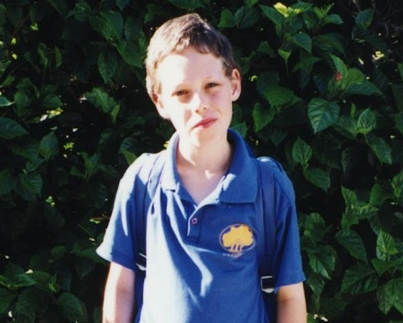

Master of Applied Cybernetics - CECS8001 – Build Journey
David Auricht - U7446851
Cyber-Physical System Project
Covered: Skills 1, 2, 3
The Cyber-Physical System (CPS) Project was a massive undertaking that relied upon and assisted in developing all three target skills. With a team working to the goal of building a “Haptic Compass” vibrating and guiding wristband, and in order of skills, I would need to rely upon:
- Coding - Writing Python code to support two ends of an interface:
- A microcontrolled wristband that interprets signals from a "chief" device and actuates them as the triggering of any combination of four buzzers embedded in the band.
- The "chief" device that sends commands as determined by the use case and the present enviornmental state (e.g. GPS location)
- Physical “making” - Iteratively breadboarding a circuit fit for purpose, then soldering it together in a way that suits a working prototype.
- Project managing - Working with a team to build a defined set of goals that suits all of our individual targetted outcomes, working to an iterative model that aims to ensure a functional product at multiple intervals, and an appropriate demonstration of our work, in line with hitting a strict deadline.
As previously, I mapped an initial concept schematic that described, at a high level, the functionaility of the product to guide my, and thus the team's, thinking and approach:
Model of intended prototypical and end-state Haptic Compass system
When contrasted with the first semester's individual maker project, this work presented a number of fresh challenges. Given the nature of this journal, I will group my writing according to the three "Skills".
Coding
With the previous semester's gargantuan (given my lack of experience, and the time available) effort in mind, I decided that a course learning to apply was that of alloting suitable effort to meet personal and assessment criteria without risking burnout, or jeopardising other matters (whether personal or academic). Codewise, then, I took a more iterative and simplistic approach that rapidly evolved from my ideal state, of building a bespoke Android application to triangulate position and trajectory using a phone's GPS sensor and thus continually identify necessary navigational prompts that can be passed to the Haptic Compass, to a more moderate one that would serve just as well on demonstration day and allow appropriate effort be placed in the many other priorities. This may not be classic "learning to code", but as with many things in life there is a good lesson in accepting when enough is enough!
On a perhaps more classic code level, I enjoyed the challenge of defining dataflow between devices. Given the limitations of the Circuit Playground Expresses we used for prototyping, I determined that passing of a simple text string (whether via Serial or Bluetooth) was well suited to conveying the necessary information for a buzz pattern.
Again, the learnings here were unlike others in the course where I strove for complexity - As I iterated, I trimmed the schema from my initial design, in which three commands were sent in a single packet, and buzz lengths of "short", "medium", and "long" were defined:
# string should be of format FFFLLLRRRBBBTTTV where FFF refers to a command for the front buzzer, LLL left, etc. etc.
# TTT represents the time of each pulse and V represents a checkdigit
# each command for each buzzer allows for three pulses per signal, each pulse either short (denoted by "S", medium "M", long "L", pause "Z" or pass "X")
To a much simpler one in which a single buzz was sent per packet along with a numerical buzz length and time to wait before commencing next buzz:
# string should be of format FLRBTTPPPV where F refers to the front buzzer, L left, etc. etc.
# the buzzer is either activated by this commmand with an inclusion of the actual letter (e.g. B in index 3) or left unactivated with an "X" in this position.
# TT represents the time of each pulse, in tenths of a second, PPP the time to wait before initialisation of the next buzz, and V a checkdigit.
A number of factors prompted the moves that culminated in this solution; in particular the integration between code and a physical band that allowed us to feel the actuations on our wrists and determined the need to have more tunable buzz time, and the implementation of a hardcoded buzz pattern for demo day that aligned with preconsidered timing, and was uncomfortably complex to implement with the initial concept.
Script as adapted for running prototyoes on demonstration day.
Whilst not as deep and convuluted (codewise) as the baby monitor, the inclusion of a controlled physical actuator brought a different element to the coding. The discovery that different transistors we had at our disposal, for example, required opposite handling (setting "False" to turn on a buzzer, for example, with one form of transistor where the other required "True" to actuate), and the aforementioned need to account for suitable actuation time to be processed by the human user led to further tweaks. Even when coding a breadboarded system, consideration of actuation was needed - buzzers were difficult to judge behaviour of via visual means, and had a painful tendancy to buzz their way out of a breadboard, and LEDs were determined to provide a suitable analogue for this phase of developement.
Breadboarding of the CPS, with LEDs representing buzzers.
There was an important lesson throughout the coding in terms of the order of operations, and understanding of dependencies - key milestones needed to be reached by physical build and code developement so integration could be tested and direction changed if needed.
Building
Whilst not a complex concept, the manufacture of the Haptic Compass prototypes required a large amount of very finnicky soldering, wiring, and insulation, and was instrumental in my development.
As with the coding, build was an iterative process within which I initially breadboarded, then clipped circuits together with alligator clipped leads, and finally began to solder and bring together a more polished product.

Evolution of physical builds (progress right to left)
As we moved from clips to soldering, the first step was to wire together self contained buzzer "modules" that incorporated a buzzer motor, transistor for control, capacitor for reliability and a resistor to ensure appropriate strength of signal from the Circuit Playground Express. These could be individually tested and validated through simple code on the CPE, and taught the value of appropriate insulation (shorting any of the wires was of course problematic!) and also the fragility of the structure without appropriate support; as we brought components together it became increasingly important to strengthen with overlying heatshrink.
Four of these modules were then wired together to draw upon common power supply (in parallel), and again retested with a CPE one at a time.

Half way with wiring and soldering - Four buzz modules in parallel, with power wired but no control.
Finally, control wires were soldered to the CPE, and it was tested one last time before integration with the band.
Soldering the control wires
As this was integrated into the band, placed on wrists, and tested, further issues came to light that necessitated final alterations - some joints proved intermittently faulty when bent, and a set of transistors became non-functional when used for long periods (presumably due to overheating).
This was an intricate soldering process throughout, as depicted in photos, that required a lot of work and rework, and my ability to "build", and in particular wire and solder, was greatly enhanced.
Project Management
As with all teams in the cohort, the range of skillsets and expertises in our group was almost as varied as our styles of working and our scheduling. The balancing of priorities and roles required management that took individuals into account, and was ultimately grounded in trust between teammates.
CPS Team (Why do I look like I'm terrified?)
This was, by far, the most diverse team that I have been involved in - My background is within a rather well defined discipline, and as such I'm used to working with, and managing, software testers that generally have common mindsets and approaches. With a small team we were able to share some degree of the "Project Management", and I slowly began to develop an appreciation of the different aspects we were bringing together - in particular, the audiovisual experience that was not technically part of the prototype, but which was key to demonstration and thus the wooing of interested parties on demo day.
A few key lessons were ultimately learned regarding Project Management during this work, specifically the importance of:
- Transparency - Keeping each other aware of the present state of our work, and next steps, at all times even if we were working on unlinked aspects of the project. This built confidence, and allowed for us to provide guidance and support to each other as needed.
- Accountability - With each of us accountable for specific parts of the project, there was motivation to deliver and awareness of what we were focussing our attention on.
- Communication - Keeping discussion flowing brought the team closer and meant that discussions could be handled in a friendly manner.
- Awareness and compromise - It was easy at times to keep internalised our own views of the project, only to find that these strayed from those of others in the group. The further we progressed, the more openly we discussed our perspectives and this facilitated the output of a prototype that fitted the different funal use cases that we had in mind.
Whilst I wouldn't say I, or any of the team managed the project in completion, these learnings are key to any future endeavours in this area.

Dave
"Recovering Professional Cynic"
With a background in software testing, and management thereof, I come to the programme looking to hone broader interests in modern and emerging technologies and the benefits I hope they can provide to society.
Entries
-

Intro
An introduction to myself and my journal. -
 Skills
Skills
An overview of "build" skills to be developed -
 Semester 1
Semester 1
A fortnight-by-fortnight look at skill growth -
 Semester 2
Semester 2
A fortnight-by-fortnight look at skill growth -
 Maker Project
Maker Project
The semester 1 maker project's learnings -
 Rolling Summary
Rolling Summary
Per-checkpoint status check -
 Appendices
Appendices